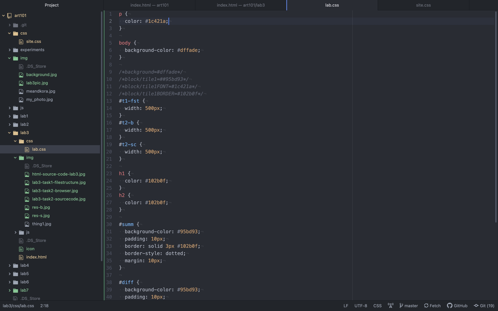

Results
Here are the results of all my work on Lab 3 (my homepage is much more fun :))
Lab 3's Source Code

Lab 3's CSS

Lab 3's Browser View
The goal of this lab was to work on our main homepages and get more practice using HTML and CSS. There was also a focus on putting images into directories and correctly linking them. My partner mainly collaborated when we were stuck on something.
One difficulty I encountered was how to get super specific things to happen, before I realized I could put an ID on anything, including links. For example, I wanted to change the color of just one word. This sounds pretty obvious, but this is the lab where I really discovered what "HTML can get really specific" meant. Learning about IDs/classes in lecture is much different than starting to play with them in Atom. After that, I tried putting IDs on all my elements and it made it much easier to control very small pieces of my website. For example, I figured out how to change what links looked like and used that to make a hidden easter egg on my site. I’m also struggling with making photos look better. I wish there was a drag and drop feature on HTML, but of course that would mean there’s no code.
Here are the results of all my work on Lab 3 (my homepage is much more fun :))
Lab 3's Source Code
Lab 3's CSS
Lab 3's Browser View
Here is the screenshot of my file structure from my homepage.
Here is the screenshot of my browser (left) and source code (right) from my homepage. The screenshot doesn't capture it, but my homepage has a lot of CSS work done on the links. The color changes when you hover and is different from the resting, default appearance.
Composed from this entire webpage!
Complete! (see all captioned photos on this site).